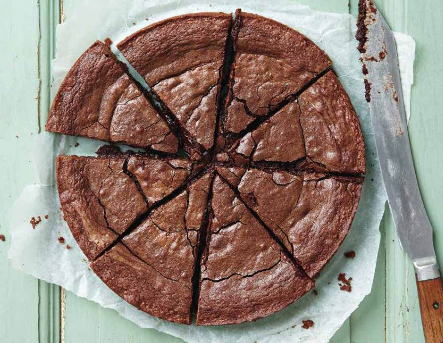

CHOKLADBOLLAR
INGREDIENSER: 100 g smör 1 dl socker 3 msk kakao 3 dl havregryn 3 msk kallt starkt kaffe (valfritt pärlsocker eller anna garnering
- Låt smöret puttra en kort stund.
- Rör ihop socker,vaniljsocker, kakao, havregryn, kaffe och smöret.
- ställ in i kylen i ca 15 min.
- Forma till bollar och rulla i pärlsocker eller annan garnering.
GÖR SÅ HÄR:
Recept för: 30 chokladbollar
Kladdkaka
Ingredienser:
100 g smör eller margarin, 2 st ägg, 2 dl strösocker, 2 tsk vaniljsocker, 3 msk kakao, 2 krm salt, 2 dl vetemjöl, Servering: ca 3-4 dl vispgrädde, Utrustning du behöver: 1 st form med löstagbar kant / springform eller annan form som tål ugn ca 20 cm i diameter Utrustning som är bra att ha: elvisp Gör så här: Smält försiktigt smöret (eller margarinet) i en kastrull på spisen. Tag bort kastrullen från spisen och värmen när drygt hälften av smöret smält och rör med en sked tills resten av smöret smält som då smälter av redan befintlig värme. På så sätt slipper smöret bli onödigt varmt vilket är bra när vi tillsätter resten av ingredienserna. Smörj och beströ en rund form, gärna med löstagbar kant, ca 20 cm i diameter, med ströbröd eller kokosflingor. (Man kan hoppa över detta steg om man har en form med bra yta som det inte fastnar på så lätt.) Tillsätt ägg, strösocker, vaniljsocker, kakao och salt till det smälta smöret. Vispa eller rör snabbt ihop till en jämn smet. (Jag brukar använda elvisp, kladdkakan får då en lite frasigare yta men blir kladdig inuti om man gräddar lagom länge, vilket jag tycker blir gott.) Tillsätt vetemjöl. Vispa eller rör snabbt ihop till en jämn smet. Bred ut smeten i formen. Grädda i 175°C i ca 17 minuter i mitten av ugnen. Om man vill ha en kladdig kladdkaka så ska den fortfarande dallra i mitten om man skakar lite på den när man tar ut den ur ugnen. Ju mer den dallrar desto kladdigare kladdkaka. Vill man ha en extra kladdig kladdkaka ska den alltså gräddas kortare tid i ugnen och hela kakan ska dallra (inte bara mitten) när man tar ut den. Låt den färdiggräddade kladdkakan stå och stelna. Först kan den stå i rumstemperatur och sedan i kylskåp eller motsvarande, det brukar ta ca 1-2 timmar innan den stelnat. Servera med vispad grädde.
